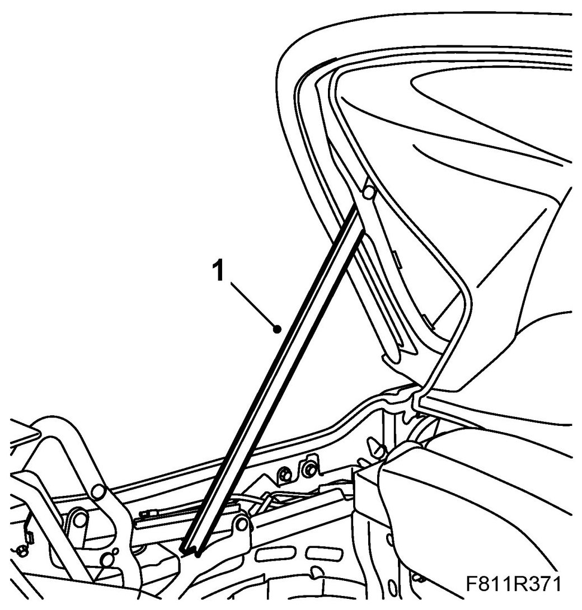
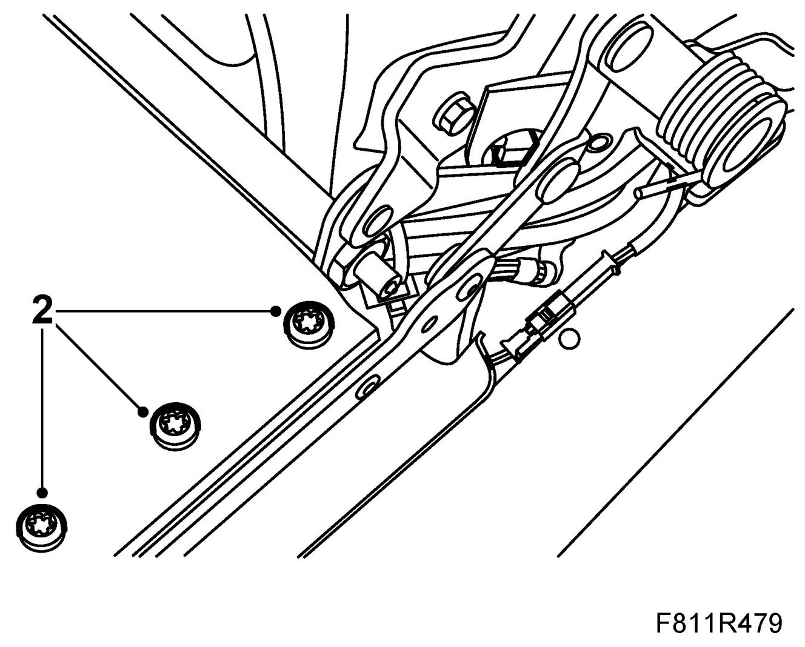
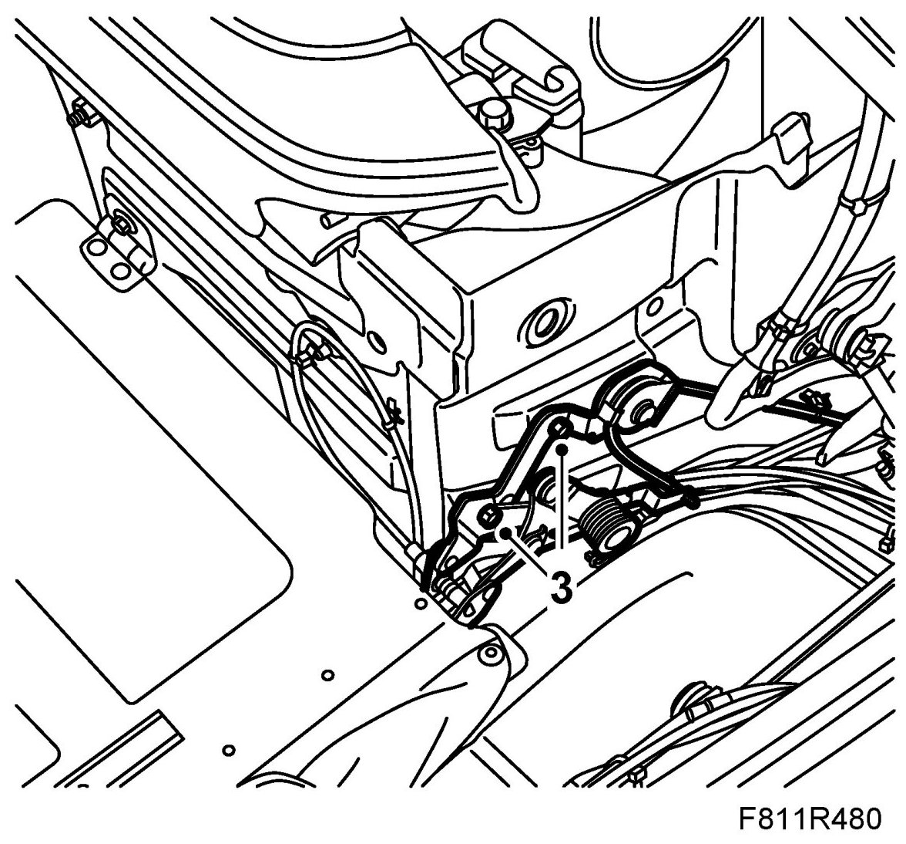
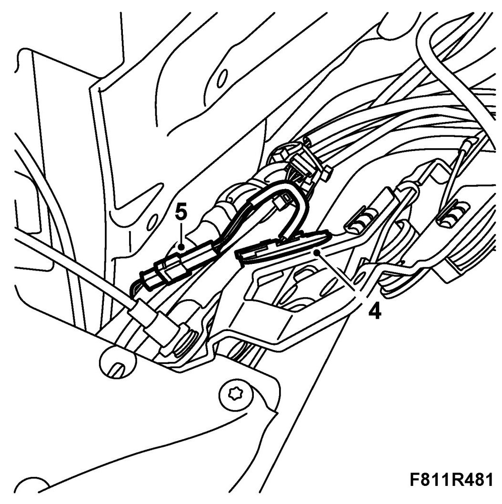
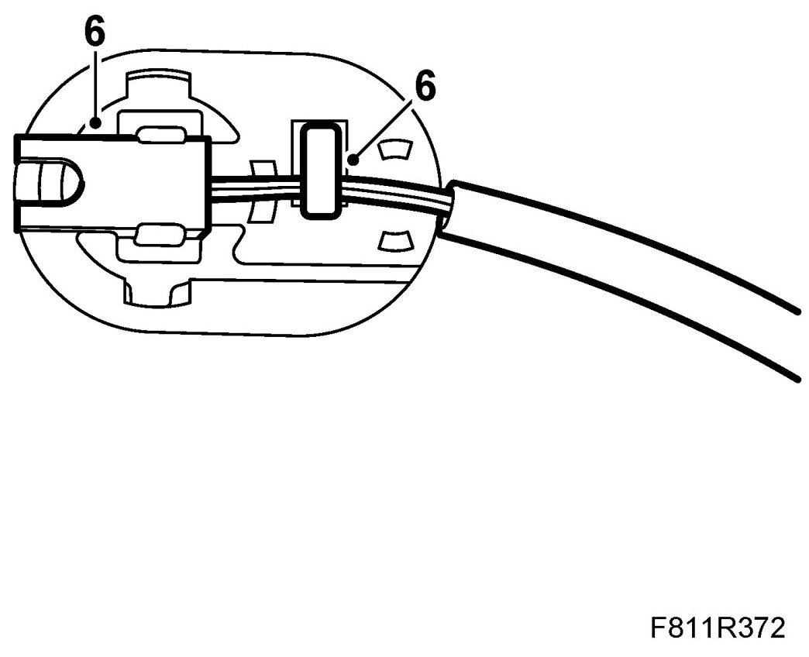
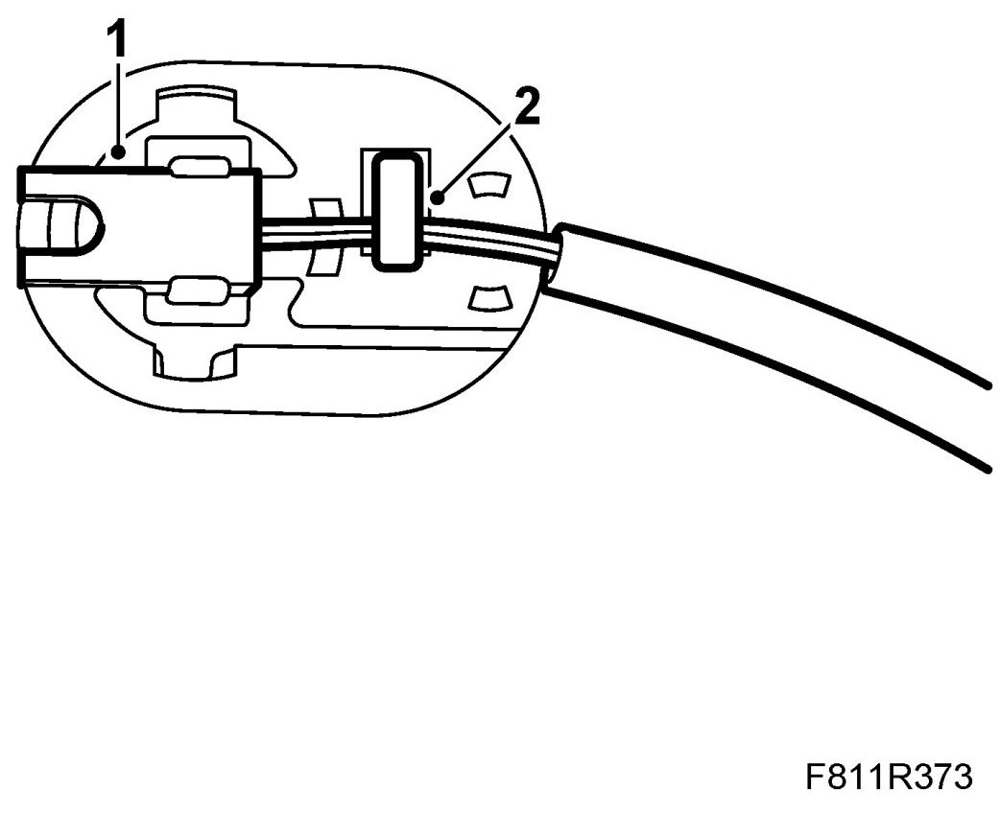
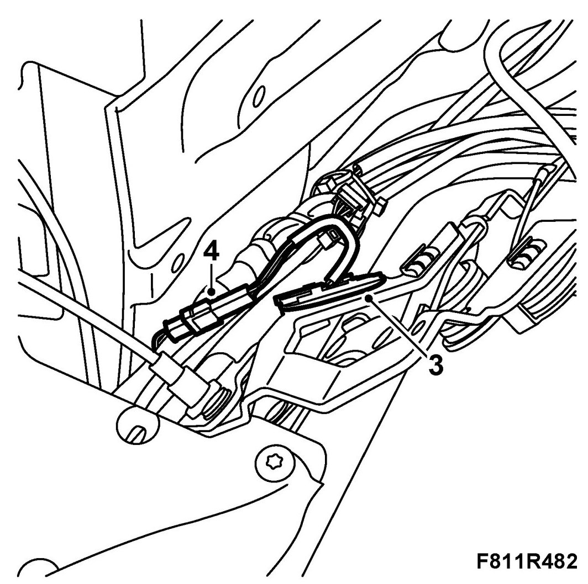
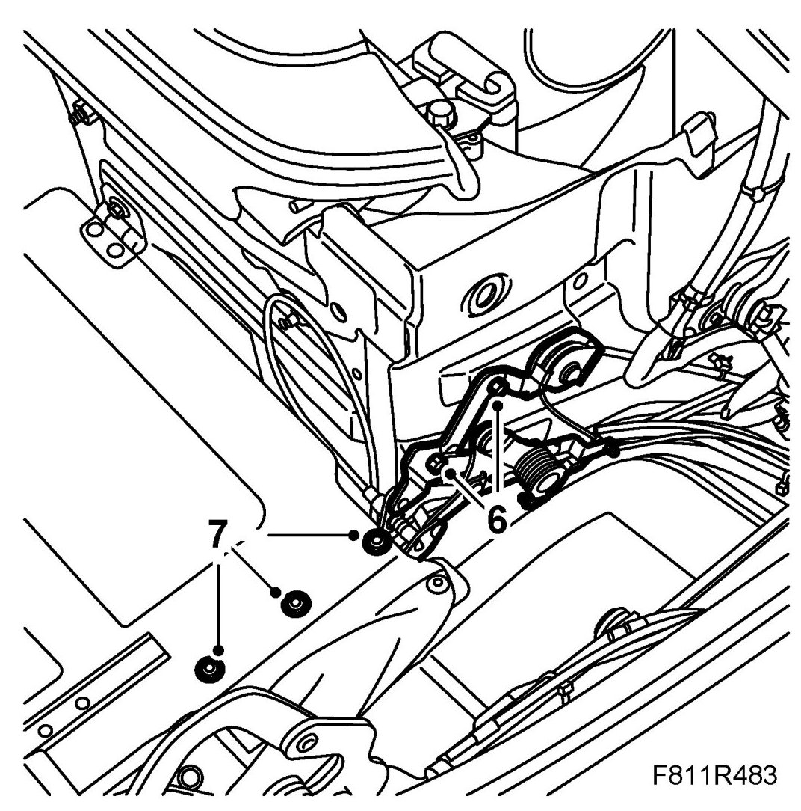

Position Sensor, Soft Top Storage Down (564)
Position Sensor, Soft Top Storage Down (564)
To remove
The soft top storage drive is located on the right-hand side of the car and is fitted with a position sensor.
1. Open the soft top cover. Raise the sixth bow and support it with 82 93 847 Soft top support.

2. Remove the soft top storage side bolts.

3. Remove the bolts for the soft top storage drive mechanism. Price out the mechanism.

4. Remove the position sensor holder.

5. Remove the position sensor connector (black).
6. Unhook the position sensor cable from the holder. Remove the sensor from the holder.

To fit
1. Fit the sensor to the plastic holder.

2. Hook the sensor cable to the holder.
3. Fit the position sensor with plastic holder to the soft top storage drive.

4. Plug in the position sensor connector.
IMPORTANT: Cables to hydraulic lines and position sensors must be refitted as they were earlier or there will be a risk of them being damaged when the soft top and soft top cover are operated.
5. The position sensor connector must be located behind the hose package so it does not catch on the mechanism.
6. Fit the bolts for the soft top storage drive mechanism.

7. Fit the soft top storage side bolts.
8. Remove the soft top support and raise the soft top.
9. Test the operation of the soft top.
10. Connect the diagnostics tool and erase any diagnostic trouble code.